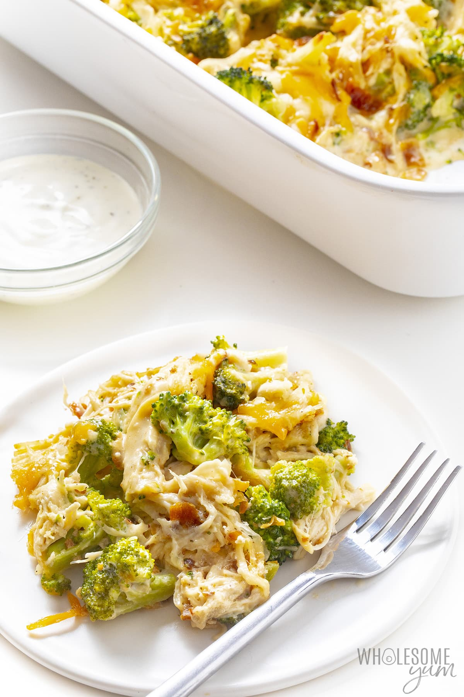

Chicken Bacon Ranch Casserole

Description
The whole family will love this cheesy chicken bacon ranch casserole recipe!
This quick and easy low carb chicken casserole has just 7 common ingredients, 5 minutes prep, and 2 ways to make it.
Ingredients:
- 4 cups Chicken breasts (cooked, cubed or shredded).
- 8 slices Bacon (cooked, chopped)
- 3 cloves Garlic (minced)/LI>
- 1 cup Ranch dressing
- 1 cup Mozzarella cheese (shredded, divided)
- 1 cup Cheddar cheese (shredded, divided)
- Broccoli version only 5 cups Broccoli (cut into florets)
- Spinach version only 1 lb Frozen spinach (thawed, squeezed to drain well)
Steps:
- Preheat the oven to 375 degrees.
- If using frozen spinach, thaw and squeeze to drain first. If using broccoli, place it into a pot of water and bring to a boil. Simmer for 1-2 minutes until bright green.
- Combine the chicken, bacon, drained spinach or broccoli, garlic, ranch dressing, and half of the shredded cheeses in a large bowl.
Stir until well incorporated. Transfer to a 9×13 in (23×33 cm) glass or stoneware casserole dish. (Alternatively, you can mix everything directly in the casserole dish.)
Optional tip: If you like extra ranch flavor, add 1-3 teaspoons of ranch seasoning mix, in addition to the dressing.
- Top with remaining shredded mozzarella and cheddar cheeses.
- Bake for about 15 minutes, until hot and bubbly.